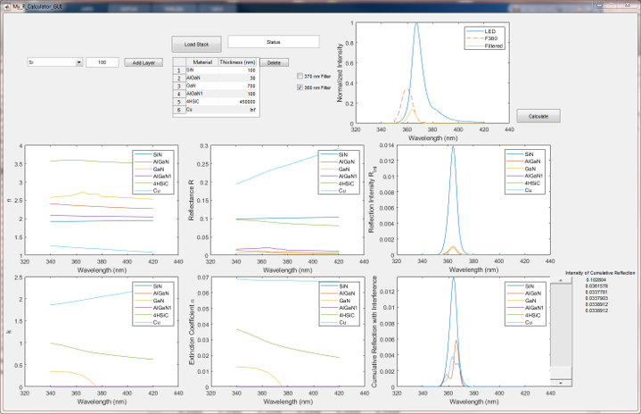

GaN HEMT Project
In this project, a combined experimental and numerical approach is used to fully characterize different substrate configurations of GaN high electron-mobility transistors (HEMTs). The experimental technique is based on thermoreflectance imaging optimized for measuring from the GaN suraface. The thermal response is measured for the different devices and used in a reverse modeling approach to develop a simulation model of GaN-on-Si, GaN-on-SiC, and GaN-on-diamond HEMTs. The experimental study provides a quantitative measurement of the self-heating, while the numerical analysis is a qualitative approach that provides thermal property estimates.
High-Resolution Thermoreflectance Imaging Investigation of Self-Heating in AlGaN/GaN HEMTs on Si, SiC, and Diamond Substrates
Assaad El Helou, Pavel L. Komarov, Marko J. Tadjer, Travis J. Anderson, Tatyana I. Feygelson, Bradford Pate, Karl D. Hobart, and Peter E. Raad
In this study, self-heating in AlGaN/GaN HEMTs on high conductivity substrates is assessed using a high-resolution thermoreflectance (TR) imaging technique, to compare the thermal response between GaN-on-Si, GaN-on-Diamond, and GaN-on-4H-SiC. The TR method accuracy at high power density is verified by using a non-linear coefficient of thermoreflectance (CTR) as function of temperature. The acquired steady-state thermal maps give a thermal resistance of 11.5 mm.K/W for GaN-on-Si (based on peak channel temperature), compared to 2.7 and 3.3 mm.K/W for GaN-on-SiC and GaN-on-diamond substrates respectively. Even with a lower average thermal resistance, GaN-on-diamond showed a 20% higher peak thermal resistance than GaN-on- SiC, which could result in higher self-heating and thermallyenhanced device degradation. The analysis reveals the importance using high resolution imaging to detect hot-spots and areas of peak temperature that largely affect failure initiation and device reliability and which may not be otherwise observable.
Full thermal characterization of AlGaN/GaN HEMTs on Silicon, 4H-Silicon Carbide, and Diamond using a reverse modeling approach
Assaad El Helou, Y Cui, Marko J. Tadjer, Travis J. Anderson, Tatyana I. Feygelson, Bradford Pate, Karl D. Hobart, and Peter E. Raad
The numerical part of the thermal investigation is based on a reverse modeling approach that is used to optimize a simulation model of the studied GaN to match the observed thermal response at the surface. The approach is presented in the figure below. The simulation models are built in T°Solver and uncertain input parameters are optimized using an optimization algorithm.

The benefits of the reverse modeling approach is that the optimized model provides:
- the full 3D temperature distribution in the device structure
- estimates of the uncertain thermal parameters (thermal conductivities, heat generation profile)
- experimentally-valid model that can be used to conduct parametric studies
- device thermal at time of testing, where the approach can be used to monitor health and degratation after prolonged activations.


GaN Epi-layer Reflectance Analysis using Numerical Optical Calculator
In this work, the reflectance of the GaN/substrate epi is investigated using a numerical approach. The reflectance of the different layer interfaces, as well as the absorption and interference effects are modeled to analyse the information contained in the reflected signal. The results show that the near-UV light is absorbed in the GaN layer and does not reflect from lower layers. The stray illumination beyond 380 nm may penetrate to the substrate surface but can be blocked by using a 360 nm and a 370 nm filter.
